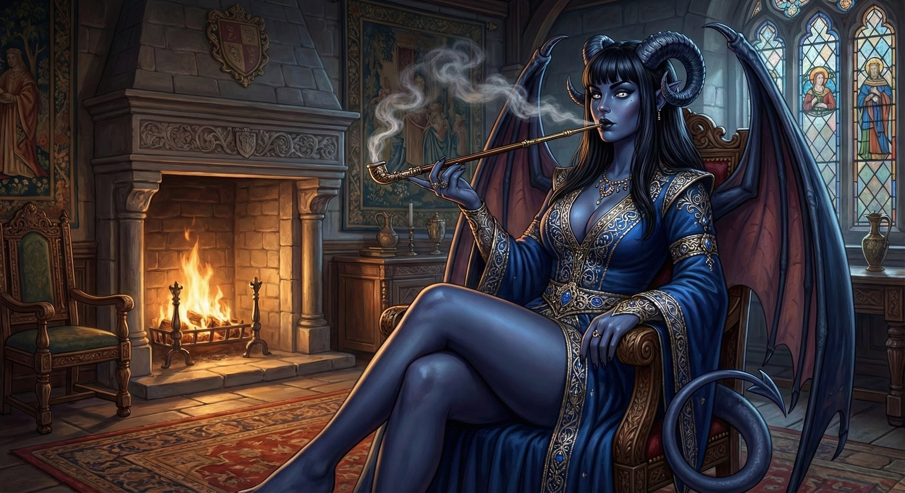

Marcus havia renascido em um mundo diferente da Terra.
Nos primeiros momentos, resistiu à ideia com tudo o que tinha. Questionou, negou, tentou racionalizar. Mas, cedo ou tarde, até o cético mais convicto é forçado a aceitar aquilo que a realidade esfrega em sua cara.
E a realidade era simples: ele estava ali.
Agora, seu nome era Oliver, nome dado por sua mãe, Eliandris. Oliver era um meio-elfo de cabelos roxos e olhos vermelhos, com a pele tão pálida que parecia quase translúcida.
Diferente de sua vida anterior, não havia conforto nem estabilidade, nessa nova existência, sua mãe, uma elfa de cabelos roxos e olhos amendoados de um dourado suave, sobrevivia vendendo o próprio corpo, seu pai era um completo mistério, Oliver nunca o conhecera, nem ouvira falar dele.
Desde seu nascimento, haviam se passado 7 anos, tempo suficiente para aprender muitas coisas.
No primeiro ano, Oliver não compreendia uma única palavra do que sua mãe dizia, a língua soava estranha, melódica, distante de qualquer idioma que conhecesse, se tivesse de comparar, lembrava vagamente o francês, mas logo descobriu que se tratava do élfico, uma língua exclusiva daquela raça.
Com as pessoas de fora, Eliandris falava outro idioma, chamado Universal, língua comum usada pela maioria da população. Oliver cresceu ouvindo ambas, aprendendo-as naturalmente, como qualquer criança… ainda que sua mente não fosse a de uma.Mais tarde, Eliandris fez questão de alfabetizar Oliver, portanto, além de falar as duas línguas, ele também sabia ler e escrever.
Chamar o local que vivia de ‘casa’ era generosidade demais.
Atrás do bordel Cauda de Sereia, as damas da noite dispunham de pequenos alojamentos de madeira apodrecida. Um único quarto para cada uma, com um banheiro compartilhado. Oliver e sua mãe viviam em um desses quartos, apertado, úmido e mal iluminado.
Oliver jamais imaginara sentir saudade de privadas modernas até ser obrigado a usar um sanitário medieval.
O "banheiro" era uma latrina comunitária: um buraco num casebre de madeira sobre um fosso de dejetos, o cheiro era uma agressão física, para um homem acostumado com a limpeza clínica e o cheiro de óleo de armas, aquilo era tortura. Oliver desenvolveu um ritual obsessivo: entrava, prendia a respiração até o limite pulmonar, fazia o necessário e saía correndo. E a higiene? Inexistente para a maioria. Oliver, contudo, andava sempre com uma cumbuca de água roubada da cozinha para lavar as mãos religiosamente.
O mundo fora do chiqueiro, no entanto, era fascinante.
A pequena cidade de Corval era um caldeirão biológico. Da janela ou nas breves idas ao mercado, Oliver via o impossível caminhar pelas ruas. Além dos humanos, que compunham a maioria, havia anões atarracados, draconatos com escamas brilhantes e homens-fera. Oliver estimava, com seu olhar analítico, que cerca de 25% da população não era humana.
Ele próprio era uma anomalia, suas orelhas eram pontudas, mas curtas, metade do tamanho das de sua mãe. E enquanto a maioria dos elfos que via tinham cabelos loiros claros, o roxo de seus cabelos era uma marca que atraía olhares curiosos e, às vezes, hostis.
Oliver aprendeu cedo sobre o racismo daquele mundo. Não era velado como na Terra, era cru. Mas ninguém sofria mais que os Cornídeos.
Ele descobriu isso através de sua melhor e única amiga adulta: Erina.
Erina era uma das cortesãs mais requisitadas e a favorita de Oliver, ela era uma Cornídea, uma raça tocada por heranças infernais, sua pele era de um azul profundo, e dois chifres curvos adornavam sua testa, rompendo a cascata de cabelos negros. Ela tinha olhos escuros como o abismo, 1,72m de altura, seios fartos e curvas perigosas. Mas o que realmente prendia a atenção de Oliver eram as asas e a cauda. Ela era uma humanóide alada, cuja envergadura, se aberta, seria o dobro de sua altura.
Apesar da aparência demoníaca que causava repulsa em conservadores, Erina era a pessoa mais inteligente que Oliver conhecera naquele buraco.

“Xeque. Ou melhor... Dominus” disse Oliver, movendo sua peça de Falange no tabuleiro.
Erina bufou, cruzando os braços e fazendo a cauda chicotear o ar com irritação.
“Tsk. Maldito o dia em que te ensinei a jogar Regnum, garoto. Você é uma peste”
“Você deixou o flanco esquerdo aberto, Tia Erina. O General não pode cobrir duas diagonais ao mesmo tempo” retrucou Oliver com a calma de um veterano.
“Quando você crescer, minha reputação de melhor jogadora de Corval vai para o lixo” resmungou ela, embora houvesse um sorriso orgulhoso em seus lábios.
“Tia, com todo respeito, ser a melhor em uma cidade de mil habitantes onde metade não sabe ler não é estatisticamente impressionante”
“Olha a audácia do pirralho!”
A tarde seguia agradável. Oliver adorava aquelas sessões. Erina aprendera o jogo para entreter clientes inteligentes que buscavam conexão, não apenas carne. Mas com Oliver, ela jogava por prazer. O garoto lembrava a ela que havia inteligência naquele mundo, mesmo num corpo de criança.
A partida, porém, foi interrompida por batidas na porta.
“Erina? Um cliente chegou” avisou a voz da madame.
Erina suspirou, a postura relaxada desaparecendo para dar lugar à máscara profissional.
“Fim de jogo, Oliver. Hora de trabalhar.”
Oliver recolheu suas peças e saiu. No corredor, ele cruzou com o tal cliente. Era um homem de meia-idade vestindo um robe luxuoso de seda azul. Na mão, ele carregava um cetro com um orbe azul pulsante na ponta.
O homem nem sequer olhou para a criança no corredor. Passou por ele como se Oliver fosse parte da mobília. Enquanto descia as escadas, Oliver ouviu o sussurro venenoso de duas outras cortesãs encostadas no corrimão.
“A Erina tem muita sorte... vai atender um nago, a gorjeta dele deve pagar meu mês inteiro”
“Deixa de inveja, sua vaca, você mal sabe somar dois mais dois, magos gostam de conversar, se a Erina cobra caro, é porque ela tem cérebro, diferente de você que só tem peito.”
Oliver ignorou a briga e saiu para o pátio dos fundos. Sua mãe estava lá, esfregando lençóis num tanque de pedra, os braços finos avermelhados pelo esforço e pela água fria. Ao vê-lo, o cansaço em seu rosto deu lugar a um sorriso radiante.
“Olá, meu pequeno! Venceu a Erina de novo?”
“Empatamos.” mentiu Oliver, para não ferir o orgulho da amiga indiretamente. “Tive que sair mais cedo, chegou um cliente importante, um mago.”
As mãos de Eliandris pararam de esfregar o tecido. A expressão dela mudou sutilmente, uma expressão de surpresa e preocupação cruzando seus olhos amarelos.
“Isso é raro, magos não aparecem muito por aqui… ainda mais em um lugar isolado como Corval”
Corval ficava na rota principal entre a capital Eldravin e Duskhaven. Mesmo pequena, recebia viajantes e, com eles, dinheiro. O bordel prosperava por isso.
Após algumas horas, pouco antes do anoitecer, Oliver decidiu subir para ajudar tia Erina com a limpeza do quarto. Quando chegou, encontrou o aposento vazio, não se importou, afinal, Erina não morava ali.
Trabalhou em silêncio, trocando os lençóis e abrindo a janela para deixar o ar pesado escapar. Ao terminar, algo ao lado da cama chamou sua atenção, um anel prateado, simples à primeira vista, mas coberto por inscrições estranhas que ele nunca tinha visto antes.
Não era incomum que clientes esquecessem objetos. Normalmente, Oliver tentaria devolver o item ao dono, no entanto, ele já havia ouvido as outras consortes comentarem que o mago partira logo após o atendimento, sem saber a quem devolver, Oliver guardou o anel consigo.
Ao chegar em casa, encontrou a mãe já arrumada para trabalhar.
Aquilo ainda o afetava, não conseguia aceitar.
Mesmo vendo a cena todos os dias, ele nunca conseguia se acostumar. Aquela era a mulher que o amamentara, que o acolhera com carinho, que sorrira para ele até nos piores momentos, nunca gritava, nunca reclamava. Possuía o sorriso mais belo que ele já vira.
E agora, mais uma vez, ela sairia para vender o próprio corpo para sustentar o lar.
Oliver entendia o motivo, era daquele dinheiro que vinha a comida, as roupas e tudo o que precisavam para sobreviver, ainda assim, aceitar aquilo era difícil, sempre era.
Apesar de viver em um lugar questionável, Oliver não passava fome, sua mãe seguia uma dieta baseada apenas em vegetais, algo que parecia comum entre os elfos. Eles evitavam se alimentar de animais sempre que possível, no início, Oliver detestara, com o tempo, acabou se acostumando, havia pratos surpreendentemente saborosos e, acima de tudo, ele nunca sentiu o peso da fome.
Na manhã seguinte, Oliver despertou com vozes agitadas vindas da entrada do bordel.
Virou o rosto instintivamente. A cama ao lado estava vazia. Sua mãe já havia acordado e estava em algum lugar que ele desconhecia. Isso não era estranho.
Brigas eram comuns naquele lugar. Homens embriagados frequentemente discutiam ou partiam para a violência. Durante a noite, guardas contratados cuidavam desse tipo de problema.
Mas aquilo era diferente.
Devia ser por volta das sete da manhã quando gritos altos ecoaram até o quarto. Aquela hora tornava a situação incomum, movido pela curiosidade, Oliver aproximou-se para observar o que estava acontecendo.